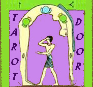

Você acabou de adquirir o livro
O Tarot Egícpio: A Jornada em Busca do Ser
Siga esse link acima, guarde nos seus favoritos, e volte sempre para renovar seu livro.
Acrescentamos informações e significados, agora com a contribuição da Marianita Vieira
Obrigada, Nelise Carbonare Vieira
 O livro está
baseado no baralho do Tarot Egípcio editado pelo
O livro está
baseado no baralho do Tarot Egípcio editado pelo